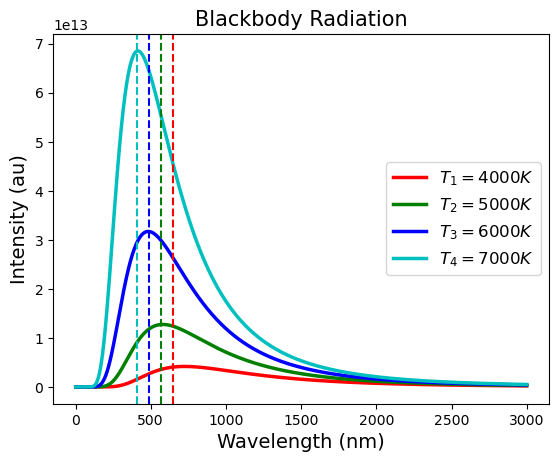
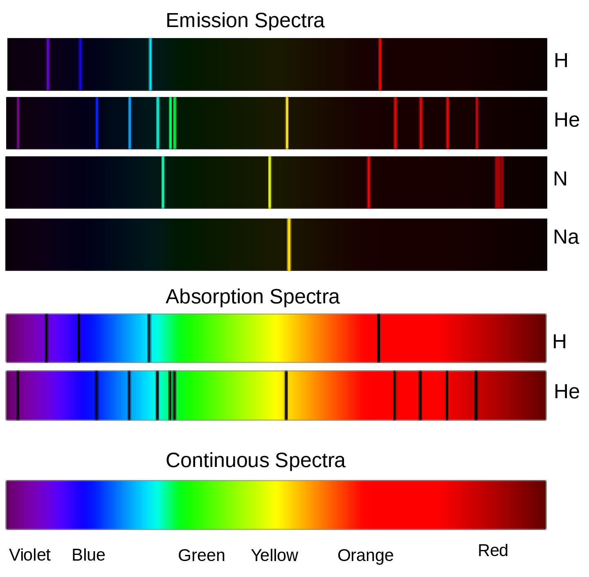
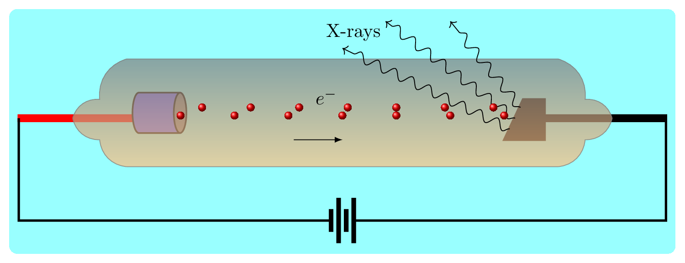

Find the energy of a photon emitted from a red light of frequency \(5.00\times 10^{14} Hz\text{.}\)
Section 7.1 Atomic Structure
Dalton’s atomic model was proposed in 1803. It tells that
-
All matter is composed of atoms, which are indivisible and indestructible.
-
Atoms of a given element are identical in size, mass, and other properties.
-
Atoms of different elements have different properties and masses.
-
Atoms combine in simple whole-number ratios to form compounds.
In chemical reactions, atoms are rearranged to form new compounds, but no atoms are created or destroyed. Dalton’s atomic theory laid the foundation for modern atomic theory.
Thomson’s atomic model was proposed in 1904. It was based on his discovery of the electron, a negatively charged particle within the atom. According to Thomson’s model, the atom was a sphere of positive charge with electrons embedded within it like raisins in a pudding. Hence this model is also known as "plum pudding" model. This model was later modified by Rutherford’s atomic model.
Rutherford’s atomic model, also known as the "planetary" model, was proposed in 1911 based on his gold foil experiment. The experiment involved firing alpha particles at a thin sheet of gold foil and observing their deflection patterns using a screen. The results showed that most of the alpha particles passed straight through the foil, but a small percentage were deflected at large angles, suggesting the presence of a heavy and dense nucleus at the center of the atom. Rutherford’s atomic model proposed that an atom consists of a small, dense, positively charged nucleus at its center surrounded by electrons in orbits around the nucleus. The electrons were held in their orbits by the attractive force between the positive nucleus and the negative electrons. This model explained why most alpha particles passed straight through the foil and why a small percentage were deflected at large angles. It also helped to establish the concept of the atomic nucleus and the basic structure of the atom.
Gold's Foil Experiment1
www.youtube.com/watch?v=kHaR2rsFNhgSubsection 7.1.1 Blackbody Radiation
A blackbody in physics describes an ideal object which can absorb all electromagnetic radiation that falls on it, at any wavelengths. Because it absorbs all frequencies of light, a perfect blackbody would appear completely black to the human eye. While perfect blackbodies don’t exist in nature, the concept is very useful in understanding how real objects emit and absorb radiation. It is our experience that when a metal rod is heated, it turns red at low temperature, then as the temperature increases its color changed into orange, yellow, white, and blue. Stars are often approximated as blackbodies, which helps us understand how they radiate light at different temperatures.
Blackbody radiation is the theoretical description of the electromagnetic radiation emitted by a perfect blackbody, which is an object that absorbs all radiation falling on it and reflects none. In 1900, Max Planck proposed a theoretical model to explain the spectral distribution of blackbody radiation, which was in agreement with experimental observations. Planck’s model proposed that energy is emitted and absorbed in discrete packets, called quanta, rather than continuous. Quanta is the plural form of quantum (in Latin, quantum means how much). The higher the frequency of the light, the more the energy per quantum. This was a major departure from classical physics and marked the beginning of quantum mechanics. Planck’s work laid the foundation for the understanding of the nature of light and electromagnetic radiation and has had a profound impact on modern physics. The study of blackbody radiation helps understand the nature of heat and light. Blackbody Radiation
2
sklkarn.github.io/Lab_anim/blackbody_radiation.html
The blackbody radiation plot shows the spectral distribution of the electromagnetic radiation emitted by a blackbody as a function of wavelength or frequency. The plot is typically represented as a curve that shows the intensity of the radiation emitted at each wavelength or frequency. The shape of the blackbody radiation curve depends on the temperature of the blackbody. At low temperatures, the curve peaks at longer wavelengths in the infrared region. As the temperature increases, the peak of the curve moves towards shorter wavelengths, and at high temperatures, the peak is in the ultraviolet region. The blackbody radiation plot is an important tool for understanding the nature of heat and light. Figure 7.1.2 shows how the brightness of the light varies with wavelength emitted by the objects at four different temperatures. It has been observed that all objects radiate electromagnetic radiation and the strongest wavelength depends on its temperature. The higher the temperature of the body, the shorter the brightest wavelength (or, the higher the frequency). For example, a hot iron bar that glows yellow is hotter than one that glows red. For an object at room temperature, most of the radiation emits in infrared region and hence is invisible.
According to Plank the energy emited in radiation is given by
\begin{equation}
E = h f = \frac{hc}{\lambda}\tag{7.1.1}
\end{equation}
Here \(E\) is quantum of energy, \(h =6.63\times 10^{-34} J \cdot s\) is Planck’s constant,, \(c = 3\times 10^{8}\) m/s is a velocity of light, \(\lambda\) is a wavelength of light, and \(f\) is frequency of light.
Planck described that at higher frequency the quanta were less likely excited so the average energy would decrease with the frequency. The exact expression for the average energy of each quanta is given as
\begin{equation*}
E = \frac{hf}{exp(hf/KT)-1}.
\end{equation*}
Example 7.1.3.
Subsection 7.1.2 Photoelectric Effect
The photoelectric effect is a phenomenon in which electrons are emitted from a metal surface when light of a certain frequency shines on it. Electrons are ejected because of the transfer of energy from light photons to electrons in the metal. The photoelectric effect demonstrated that light has a dual nature, both as a wave and as a particle.
The photoelectric effect was first observed by Hertz in the late 19th century and later explained by Einstein in 1905. The basic idea behind the photoelectric effect is that light is composed of individual particles, called photons, that carry a specific amount of energy. When these photons hit a metal surface, they transfer their energy to the electrons in the metal. If the energy of the photon is high enough, it can cause an electron to be ejected from the metal and become a free electron. This process only occurs with light of a certain frequency, known as the threshold frequency. If the frequency of the light is below this threshold, no electrons will be emitted, no matter how intense the light is. If the frequency is above the threshold, the number of electrons emitted will increase with the intensity of the light. The photoelectric effect challenged the classical understanding of light as a wave, and led to the development of quantum mechanics, which views light and matter as having both wave-like and particle-like properties. The photoelectric effect is widely used in photodiodes, photovoltaics, and photoelectric sensors, etc. Photoelectric Effect
3
sklkarn.github.io/Lab_anim/photoelectric_effect.htmlEinstein’s formula for photoelectric effect is given by
\begin{equation}
hf = KE + w\tag{7.1.2}
\end{equation}
where \(hf\) is energy of a photon of light whose frequency is \(f,\) \(KE\) is the kinetic energy of the emitted electron, and \(w\) is work function of the metal (i.e., energy needed to pull the electron from the metal). Eventhough,photon is massless and always moves with the speed of light, it behaves like a particle and possesses energy and momentum. It also interacts with other particles in the same way as one particle interacts with others.
Example 7.1.4.
The ultraviolet light of frequency \(3. 0 \times 10^{15} Hz\) is incident on the surface of a metal, whose work function is \(1.8 eV\text{.}\) Show that the kinetic energy of the emitted electrons is \(1.7\times 10^{-18} J\text{.}\)
Solution.
Given: \(f=3. 0 \times 10^{15} \,Hz\text{,}\) \(h=6.63\times 10^{-34} (\,Js)\text{,}\) \(w=1.8\,eV= 1.8\times 1.67\times 10^{-19}C= 3.0\times10^{-19}J\text{.}\)
From equation (7.1.2)
\begin{align*}
E=hf \amp = KE+w\\
or, \quad KE \amp = hf-w\\
or, \quad KE \amp = 6.63\times 10^{-34} \times 3. 0 \times 10^{15} -3.0\times10^{-19}\\
\therefore KE \amp = 19.89\times 10^{-19} -3.0\times10^{-19}= 16.89\times10^{-19} \approx 1.7\times10^{-18} J
\end{align*}
Subsection 7.1.3 The Dual Nature of Light
The dual nature of light refers that light exhibits both wave-like and particle-like behavior, which was first described by the wave-particle duality theory in quantum mechanics. This theory states that light can behave as both a wave and a particle depending on the experimental setup used to observe it. For example, in the double-slit experiment, light behaves as a wave, but in the photoelectric effect, it behaves as particles, called photons. The dual nature of light is still not fully understood and remains one of the most intriguing concepts in physics. In the double-slit experiment, light passing through two slits interferes with itself, creating a characteristic pattern on a screen behind the slits, which is typical of wave behavior. However, when light is emitted from a source and detected one photon at a time, the photons are found to behave as particles and follow a random path through the slits, not forming any interference pattern. Duality
4
www.youtube.com/watch?v=NvzSLByrw4QSubsection 7.1.4 Bohr’s Model of Hydrogen Atom
The Bohr model of the atom is a simplified representation of the structure of an atom proposed by Niels Bohr in 1913. According to the Bohr model, an atom consists of a central nucleus composed of positively charged protons and neutral neutrons surrounded by electrons in shells or orbits. The electrons occupy discrete energy levels and move in circular orbits around the nucleus, and the energy of an electron depends on its distance from the nucleus. The quantized orbits correspond to specific energy levels, and the transition of an electron from one energy level to another results in the emission or absorption of electromagnetic radiation, which is observed as a spectral line. The Bohr model helps explain the emission and absorption spectra of atoms and laid the foundation for the development of quantum mechanics. The Bohr model is used to describe the structure of hydrogen energy levels. The Figure 7.1.5.(a) represents shell structure, where each shell is associated with principal quantum number \(n\text{.}\) The amount of energy in each level is reported in eV, and the maxiumum energy is the ionization energy of 13.6 eV. The movement of electrons between these energy levels produces a spectrum. Spectral Series
5
sklkarn.github.io/Lab_anim/spectral_series.htmlThe allowed value of the atomic radius is given by
\begin{equation}
r(n) =n^2\times r(1)\tag{7.1.3}
\end{equation}
Where, \(n\) is a positive integer, \(r(1)\) is the smallest allowed radius for the hydrogen atom also known as the Bohr’s radius, \(r(1) = 0.529\times 10^{-10} \,m\text{.}\) Bohr calculated the energy of an electron in the \(n^{th}\) level of hydrogen atom by using the formula given below
\begin{equation}
E(n) =-\frac{1}{n^2} \times 13.6 \,eV\tag{7.1.4}
\end{equation}
In Figure 7.1.5.(b) the numbers on the left side represent energy levels with the lowest energy level at the bottom and on right side representing their corresponding values. The arrows represent all possible transitions of electron from one energy level to another. Each group of transitions is given the name of the scientist who identified their origin. Longer arrow means more energy is released during transition and hence the light of shorter wavelength is being emitted. The Balmer series releases light in the visible region of the electromagnetic spectrum. The Lyman series, with longer arrows, requires the higher energy of the UV region. The Paschen, Brackett series, and Pfund series with shorter arrows require the lower energy of the IR region. According to Bohr model, Lyman series appears when electrons jump from higher energy levels \((n_h = 2,3,4,5,6,\cdots)\) to \(n_l = 1\) energy state. Balmer series appears when electrons jump from higher energy levels \((n_h = 3,4,5,6,\cdots)\) to \(n_l = 2\) energy state, and so on.
Subsection 7.1.5 Origin of Spectra
The term "spectrum" originated from the Latin word "spectrum" which means "appearance". The idea of a spectrum in physics and optics refers to the distribution of light into its component colors (red, orange, yellow, green, blue, indigo, and violet) when passed through a prism or diffraction grating. Spectral lines are caused by the interaction of electromagnetic radiation with atoms or molecules. When an atom or molecule is excited by absorbing a photon of light, its electrons can transition to higher energy levels. When the electrons eventually fall back down to their ground state, they emit photons of light at specific, characteristic wavelengths, which correspond to the difference in energy between the two states. This results in the emission of light at specific wavelengths, known as spectral lines. The position and intensity of these lines are unique to the elements or compounds present, and can be used to identify and analyze the composition of stars, planets, and other celestial objects. The Figure 7.1.6 is the visible emission spectrum of H, He, and N line spectra, and their absorption spectra.

Subsection 7.1.6 X-Rays
X-rays are electromagnetic radiations with high energy and short wavelength. Its wavelength range from 0.01 to 10 nm. This short wavelength allows X-rays to penetrate materials, making them useful for medical imaging and other applications.They are used to produce images of bones and other internal organs, as well as for industrial and scientific applications. X-rays are also used in radiation therapy to treat cancer and other medical conditions. However, exposure to X-rays can be harmful, so it is important to use protective measures and limit unnecessary exposure. The discovery of X-rays is credited to German physicist Wilhelm Rontgen in 1895. Röntgen was studying cathode rays in a vacuum tube when he noticed that a screen coated with a fluorescent material emitted a bright glow when exposed to the rays. X-rays are just the reverse of photoelectric effect. Roentgen discovered that holding a high voltage across two electrodes could result in the production of high energy photons, which he called "X-rays" because their nature was unknown at the time.

X-rays are produced by the sudden change in large kinetic energy when electrons smash into the target electrode in a cathode ray tube Figure 7.1.7. The energy of the x-rays produced depends on the voltage applied.
Subsection 7.1.7 The Laser
The acronym LASER stands for Light Amplification by Stimulated Emission of Radiation. The light emitted from a laser is distinctly monochromatic compared to the light emiited from lightbulb or the sun. It is spatially and temporally coherent to a much higher degree than other light sources. Hence, the laser is a concentrated beam of light through the process of stimulated emission of electromagnetic radiation. Lasers have a wide range of applications in fields such as medicine, communications, manufacturing, and entertainment. They work by emitting a narrow, intense beam of light that can be precisely controlled and directed, making them useful for tasks that require high precision or intense light. Here are some important processes that make laser a very important tool. Light emission: Lasers emit light at a specific wavelength, which is determined by the laser material used. This narrow spectral width makes the light highly collimated and monochromatic, meaning it has a single wavelength and travels in a straight path. Stimulated emission: Lasers rely on the process of stimulated emission to produce light. This involves the absorption of energy by a material, followed by the release of that energy in the form of a photon. The photon then triggers the emission of additional photons, creating a chain reaction that results in the intense beam of light. Active medium: The active medium is the material that produces the laser light. It can be a solid, liquid, or gas, and it is chosen based on the desired wavelength and type of laser. Pumping: The active medium must be excited, or “pumped,” to generate the laser light. This can be done through electrical means, or by shining a light on the medium. Reflective cavity: The laser light is contained within a reflective cavity, which is formed by two mirrors facing each other. The light bounces back and forth between the mirrors, amplifying and intensifying the beam as it passes through the active medium. Output coupler: One of the mirrors is partially transparent, allowing some of the laser light to escape and form the laser beam. Population inversion: is a key concept in laser physics and refers to the state of a group of atoms in the active medium of a laser. Normally, the majority of atoms in a material are in the lowest energy state (ground state), and a small fraction are in excited states. In a population inversion, the situation is reversed, with the majority of atoms being in excited states and a small fraction in the ground state. This condition is necessary for a laser to produce light, as it provides the necessary amount of excited atoms that can undergo stimulated emission, releasing photons that amplify and produce the laser beam. The pumping process is responsible for creating the population inversion in the active medium. In summary, population inversion is the requirement for laser light generation, as it provides the necessary population of excited atoms to produce the beam of light through stimulated emission.
LASER6
phet.colorado.edu/sims/cheerpj/lasers/latest/lasers.html?simulation=lasers